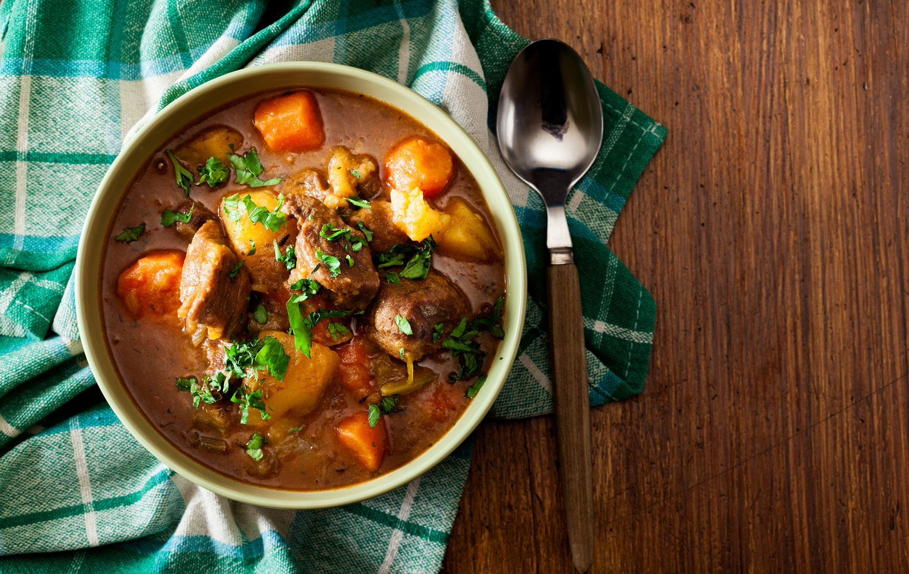

Hairy Bikers’ Irish lamb stew recipe

Serves:
Cost:
Prep:
Cooking:
Skill:
4
Cheap
15 Min
2Hr 30 Min
Medium
The Hairy Bikers' Irish lamb stew is hearty and warming and perfect for preparing ahead!
The Hairy Bikers’ Irish lamb stew is a really traditional recipe to help keep all the classic flavours in tact. Made with carrots, potatoes and onions it’s a really filling family meal that is perfect for cold winter evenings. The quantities below serve four people but you could double or triple the amounts to make a bulk batch as this Irish lamb stew tastes even better (we think!) the next day, when all the flavours have had time to develop. Plus it freezes well, too. Simply pack into plastic Tuppawear boxes and pop in the freezer for another day. You’ll just need to remember to thoroughly defrost in the fridge before you reheat. Because there are plenty of potatoes in the Hairy Bikers’ Irish lamb stew recipe it’s pretty filling as it is but if you’re feeling particularly hungry then you could serve some crusty bread on the side to mop up all the delicious juices, or even throw together some savoury dumplings!
Ingredients
- 1 onion, peeled and diced
- 4 medium onions, peeled and cut into various sizes
- 3 cloves garlic, peeled and crushed
- 6 large potatoes, peeled and cut into various sizes
Method
- In a large pan, heat the oil and butter. Sweat off the onions and garlic, slowly teasing the flavours out – 15 mins or so over a low heat should do it.
- Add the potatoes and cover them in the creamy juice of the onions and garlic. Add lots of freshly ground black pepper and 3 pinches of salt (2 pinches if you’ve got big hands). Leave the potatoes and onions in the pan for a further 15 mins over a very low heat, making sure you don’t burn them. If you’re worried they may burn, then add a little bit of stock.
- Now attend to the lamb. Trim the fat off the chops and place it in a frying pan over a low heat. Let the fat render down, then add salt and pepper. Remove from the frying pan what remains of the solid fatty bits then add your chops. Once brown, remove and place them in the pan with the onions and potatoes.
- Add some of the stock to the frying pan to get all the nice, savoury, jammy bits off the bottom, then add to your chops, onions and potatoes. Pour the remainder of the stock into the pan, to just below the level of your ingredients. Put the lid on and leave for 1 ½ hours over a low heat. Should your heart desire, add some parsley 10 mins before the stew is ready. Remove it from the heat and leave for about 10 mins to rest. Taste and adjust the seasoning.
Top tip for making Cherry lattice pie
This pie is also good made with all-butter shortcrust pastry rather than puff pastry.